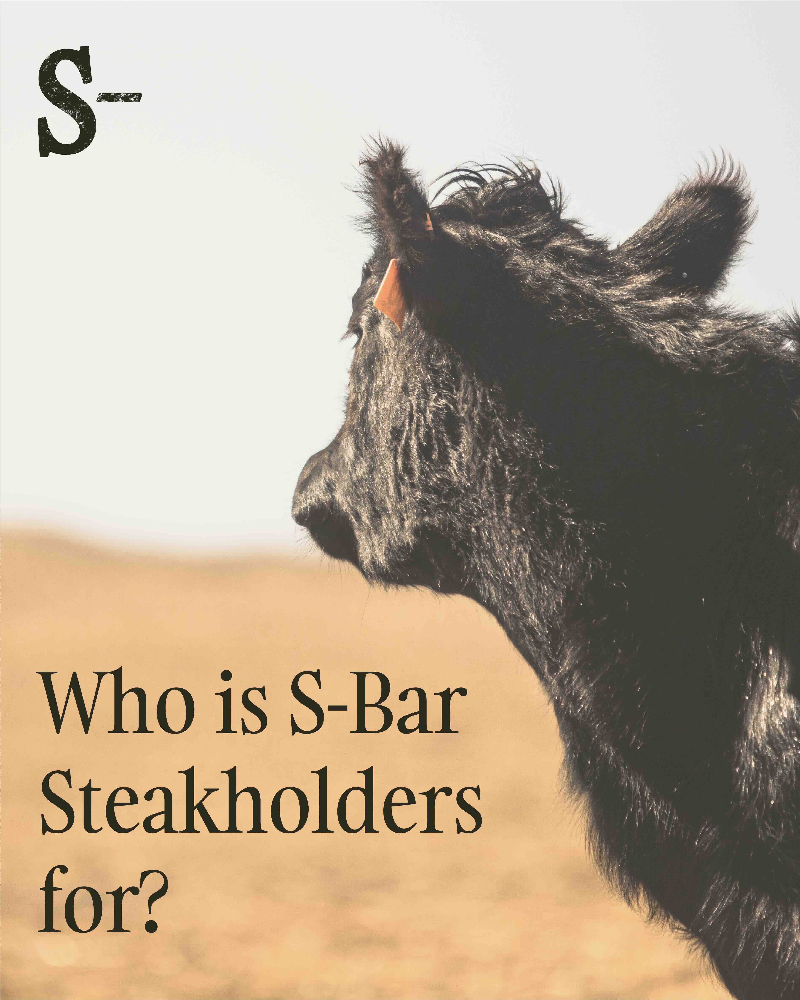

A full visual rebrand for S-Bar Steakhouse in Omaha, NE — repositioning a beloved local institution as a premium dining destination while honoring its Midwestern roots.

S-Bar Steakhouse had decades of loyal regulars but an identity that hadn't evolved with them. The rebrand needed to honor that history while signaling a new chapter.
The identity leads with a refined wordmark, warm charcoal-and-amber palette, and print collateral built for both tableside and take-home use, including a full menu suite.
Every project follows a thoughtful process — from discovery through refinement to final delivery.
Visited the restaurant multiple times and interviewed the owner to understand what loyalty meant to regulars — and what could be elevated.
Defined the brand as 'Honest Midwestern Luxury' — premium quality without East-Coast pretension.
Developed the wordmark, supporting icon, palette, and type system across all touchpoints from menus to signage.
Designed the full menu suite — dinner, bar, and dessert — plus a seasonal specials insert system.
A selection of final assets and work from this project.